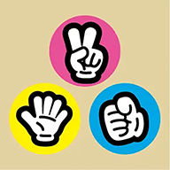

プロジェクト概要
AIじゃんけんは、ユーザーの手の動きをリアルタイムで認識し、AI相手に対戦できるブラウザベースのアプリケーションです。フロントエンドで MediaPipe Hands を動作させることで、専用のバックエンドサーバーを介さずに低遅延な画像解析を可能にしました。また、PWA（Progressive Web App） に対応しており、インストール不要でネイティブアプリのような操作感を提供します。

ブラウザのカメラを通じてユーザーの手をリアルタイムに認識し、AIと対戦できるアプリ。GoogleのMediaPipe Handsを活用し、サーバーレスで高度な画像解析を実現しました。
AIじゃんけんは、ユーザーの手の動きをリアルタイムで認識し、AI相手に対戦できるブラウザベースのアプリケーションです。フロントエンドで MediaPipe Hands を動作させることで、専用のバックエンドサーバーを介さずに低遅延な画像解析を可能にしました。また、PWA（Progressive Web App） に対応しており、インストール不要でネイティブアプリのような操作感を提供します。
「AI技術をいかに日常の遊びに落とし込み、UXを最大化できるか」という挑戦から始まりました。複雑な機材やアプリのインストールという心理的ハードルを排除し、URL一つで誰もがAIの凄さを体感できるツールを目指しました。
モバイル最適化と没入感のあるレイアウト
一般的な動画レイアウトではスマホ画面で自分とCPUが上下に離れてしまい、対戦の臨場感が損なわれる問題がありました。そこで CSS Grid を活用し、モバイル環境でも強制的に左右横並びのレイアウトを維持。視線の移動を最小限に抑え、対面でじゃんけんをしているような直感的な操作性を構築しました。
高精度なハンドトラッキングの実装
MediaPipe Handsから取得した21箇所の関節座標（Landmarks）を解析するアルゴリズムを実装。各指の先端と第2関節の相対位置をJavaScriptで計算し、「立っている指の数」からグー・チョキ・パーを判別する独自のロジックを開発しました。
HTML5, Tailwind CSS, JavaScript (ES6+)
MediaPipe Hands
Camera API, Service Worker (PWA)
アクセシビリティとUXの一貫性
「アクセシビリティ最優先」の考えに基づき、aria-live 属性を活用。AIの判定結果や勝敗が決まった瞬間、スクリーンリーダーが即座に状況を読み上げる設計にしました。また、PWA化によりホーム画面からの直接起動を可能にし、利便性を高めています。
プライバシーとセキュリティ
カメラ映像の解析をすべてクライアントサイド（ブラウザ内）で完結させる「プライバシー重視」の設計を行い、映像データをサーバーに送信しません。また、DOM操作において textContent を徹底することで、インジェクション攻撃を防ぐセキュアな実装を心がけました。